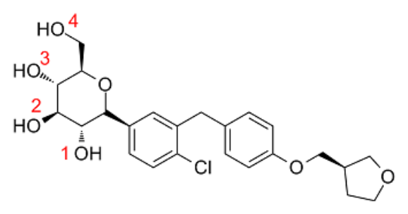
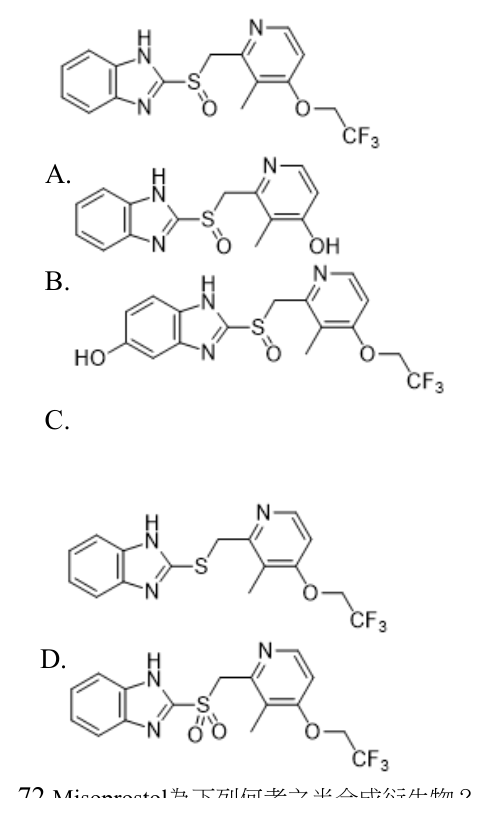
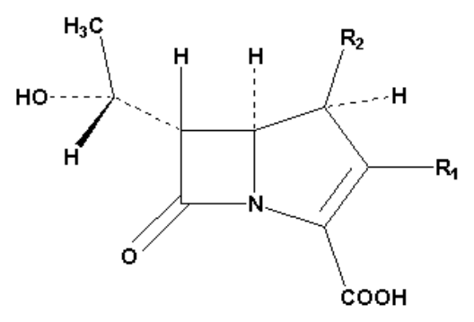

開卷有益 ／
藥師 ／ 藥理學與藥物化學 ／ 109 年第 2 次109 年第 2 次藥師藥理學與藥物化學試題與答案
這一頁是民國 109 年第 2 次藥師藥理學與藥物化學的整份歷屆試題，共 80 題，題目與標準答案出自考選部「國家考試試題及測驗式試題答案」開放資料，其中 72 題附有詳解。以下逐題列出題幹、選項與答案；要計時作答或記錄成績，請用線上練習。
考選部原始場次代碼：109100
線上作答這一科 →
全部 80 題
第 1 題
下列給藥方式，何者最可能產生first-pass effect？
（A） 口服（oral）給藥（B） 經皮（transdermal）給藥（C） 舌下（sublingual）給藥（D） 靜脈注射給藥答案：（A）
詳解與考點 正解：first-pass effect 指藥物自腸胃道吸收後，先經門靜脈進入肝臟而在進入全身循環前被代謝。（A）口服給藥符合這一路徑，最可能出現 first-pass effect，故選 A。
B：經皮給藥由皮膚進入全身循環，主要避開腸道吸收與門靜脈肝臟首渡路徑，故非答案。
C：舌下給藥經口腔黏膜吸收後主要進入體循環，因而用於避免口服的首渡代謝，故非答案。
D：靜脈注射直接把藥物送入全身循環，沒有吸收後先經肝臟的首渡步驟，故非答案。
本題考點：首渡效應（first-pass effect）——判斷給藥途徑時，先看藥物是否先由腸胃道吸收並經門靜脈入肝；全身生體可用率（systemic bioavailability）——避開首渡代謝的途徑通常可減少此一代謝損失。
第 2 題
下列抗癌藥物何者會進入細胞內，抑制EGFR tyrosine kinase的活性？
（A） trastuzumab（B） erlotinib（C） dasatinib（D） imatinib答案：（B）
詳解與考點 正解：關鍵在藥物須穿越細胞膜並直接抑制 EGFR tyrosine kinase。（B）erlotinib 是小分子 EGFR tyrosine kinase inhibitor，可在細胞內阻斷 ATP 結合位點的訊息傳遞，故選 B。
A：trastuzumab 為單株抗體，主要結合細胞表面的 HER2，不是進入細胞內抑制 EGFR tyrosine kinase。
C：dasatinib 雖也是小分子 tyrosine kinase inhibitor，但主要標的為 BCR-ABL 與 Src family kinase，非本題所問的 EGFR。
D：imatinib 主要抑制 BCR-ABL、c-KIT 與 PDGFR 等訊息傳遞標的，不是 EGFR tyrosine kinase inhibitor。
本題考點：EGFR tyrosine kinase inhibitor——辨識小分子藥物可進入細胞內、抑制受體胞內激酶區；單株抗體（monoclonal antibody）——多在細胞外結合受體或配體，須與胞內 kinase inhibitor 分開判斷。
第 3 題
下列何種藥物可誘導cytochrome P450 enzyme加速其substrate代謝？
（A） cimetidine（B） rifampin（C） ketoconazole（D） erythromycin答案：（B）
詳解與考點 正解：藥物交互作用的方向取決於是誘導還是抑制 CYP450。（B）rifampin 是典型 CYP450 enzyme inducer，會提高多種代謝酵素表現並加快其 substrate 代謝，故選 B。
A：cimetidine 會抑制部分 CYP450 活性，使受質代謝變慢而非加速，故非答案。
C：ketoconazole 為 CYP450 抑制劑，可能提高受質暴露量，與酵素誘導的方向相反。
D：erythromycin 具有 CYP450 抑制作用，可能減少受質代謝，故非答案。
本題考點：酵素誘導（enzyme induction）——酵素量或活性上升時，受質代謝通常加快；酵素抑制（enzyme inhibition）——代謝受阻時受質濃度可能上升，須與誘導造成的方向相反來記憶。
第 4 題
有關B型肝炎治療用藥，下列何者正確？
（A） tenofovir disoproxil對lamivudine及entecavir已經有抗性的病毒仍然保有其效用（B） 使用interferon alfa-2b的副作用少於adefovir dipivoxil（C） pegylated interferon alfa-2a 雖然半衰期較長但不適用於治療C型肝炎（D） 核苷／核苷酸類似物，例如entecavir，主要是將病毒清除乾淨而達到治療目的答案：（A）
詳解與考點 正解：本題比較 HBV 抗病毒藥的抗藥性輪廓。（A）tenofovir disoproxil 對 lamivudine 與 entecavir 抗性背景的病毒仍可保有抗病毒活性，符合題意，故選 A。
B：interferon alfa-2b 的全身性不良反應並不少，不能概括為比 adefovir dipivoxil 更少。
C：pegylated interferon alfa-2a 半衰期較長，且可用於 C 型肝炎的治療脈絡，本項否定其適用性不正確。
D：entecavir 等核苷或核苷酸類似物的主要作用是抑制病毒複製；持續存在的病毒模板使其通常不是以徹底清除病毒作為治療結果。
本題考點：核苷或核苷酸類似物（nucleoside or nucleotide analogues）——用於抑制 HBV 複製，不能把病毒抑制等同於徹底清除；抗藥性輪廓（resistance profile）——比較藥物時要看對既有抗性病毒是否仍保有活性；pegylation——延長 interferon 的作用時間，但不表示失去其抗病毒適用性。
第 5 題
下列藥物何者口服吸收效果差？
（A） nafcillin（B） dicloxacillin（C） ampicillin（D） amoxicillin答案：（A）
詳解與考點 正解：本題比較 penicillin 類藥物的口服吸收特性。（A）nafcillin 的腸胃道吸收不佳，口服吸收效果差，故選 A。
B：dicloxacillin 具耐酸性並可口服使用，不能與 nafcillin 一樣歸為口服吸收差。
C：ampicillin 可經口服吸收，雖其吸收特性不如 amoxicillin，仍非本題所問的最差者。
D：amoxicillin 的口服吸收良好，是臨床常用口服 aminopenicillin，故非答案。
本題考點：口服吸收（oral absorption）——比較同類抗生素時，要辨識藥物是否具耐酸性與足夠腸胃道吸收；aminopenicillin——ampicillin 與 amoxicillin 均可口服，其中 amoxicillin 的吸收通常較佳。
第 6 題
關於tamoxifen治療早期的乳癌，下列敘述何者錯誤？
（A） 縱使癌細胞有明顯表現雌激素（estrogen）受體，對於停經後的患者無效用（B） 必須長期使用較有療效（C） 不適用於懷孕及哺乳中的患者（D） 可以抑制腫瘤細胞的生長，但是並不會直接殺死腫瘤細胞答案：（A）
詳解與考點 正解：tamoxifen 為選擇性雌激素受體調節劑，早期乳癌的效益與腫瘤雌激素受體表現密切相關，並可用於停經後患者。（A）將停經後患者一概說成無效，與此適應情境不符，因此是錯誤敘述，故選 A。
B：tamoxifen 的輔助治療效益仰賴持續使用，長期治療可降低雌激素受體陽性乳癌復發風險，故非答案。
C：tamoxifen 可能影響胎兒與乳汁暴露，懷孕及哺乳期間不適用，故非答案。
D：tamoxifen 以阻斷乳癌細胞的雌激素訊號抑制增殖，屬抑制生長而非直接細胞毒殺的作用，故非答案。
本題考點：選擇性雌激素受體調節劑（selective estrogen receptor modulator, SERM）——判斷療效時先看腫瘤的雌激素受體狀態；內分泌治療（endocrine therapy）——以抑制生長訊號為主，須與直接細胞毒性化學治療區分；生殖安全性（reproductive safety）——評估此類藥物時必須考量懷孕與哺乳情境。
第 7 題
下列何種化療藥物的作用原理（機制）與其它不同？
（A） paclitaxel（B） imatinib（C） vincristine（D） eribulin答案：（B）
詳解與考點 正解：三個選項都是微管作用藥，唯一機轉不同者是訊息傳遞抑制劑。（B）imatinib 抑制 BCR-ABL 等 tyrosine kinase，不是直接作用於微管，故選 B。
A：paclitaxel 穩定微管並抑制其去聚合，屬直接干擾微管動態的化療藥物。
C：vincristine 抑制微管聚合，雖與 paclitaxel 作用方向不同，兩者同樣以微管為主要作用位置。
D：eribulin 抑制微管正端的生長，仍屬微管動態抑制劑，故非答案。
本題考點：微管藥物（microtubule-targeting agents）——先辨識是否直接改變微管聚合、去聚合或動態；tyrosine kinase inhibitor——藉由抑制致癌訊息傳遞而非破壞微管作用，須與傳統微管化療藥分開。
第 8 題
下列藥物何者不是直接進入癌細胞內產生毒殺作用？
（A） atezolizumab（B） oxaliplatin（C） gemcitabine（D） cyclophosphamide答案：（A）
詳解與考點 正解：題目所稱直接進入癌細胞產生毒殺，指的是細胞毒藥物或其活性代謝物在細胞內損傷 DNA 或干擾合成。（A）atezolizumab 是抗 PD-L1 單株抗體，在細胞外解除免疫抑制，主要藉由 T 細胞攻擊腫瘤，非直接進入癌細胞毒殺，故選 A。
B：oxaliplatin 進入細胞後形成 DNA 交聯，直接妨礙 DNA 複製與轉錄，屬細胞毒性作用。
C：gemcitabine 在細胞內轉為活性代謝物並干擾 DNA 合成，屬直接作用於腫瘤細胞的抗代謝藥。
D：cyclophosphamide 經代謝活化後，其活性代謝物可在細胞內造成 DNA 交聯，故仍屬直接細胞毒性治療。
本題考點：免疫檢查點抑制劑（immune checkpoint inhibitor）——以解除 T 細胞受抑制來間接殺傷腫瘤，不等於藥物進入腫瘤細胞；細胞毒性化療（cytotoxic chemotherapy）——以 DNA 損傷或核酸合成干擾直接傷害細胞；前驅藥（prodrug）——判斷作用位置時須看活性代謝物，而非只看母體藥物。
第 9 題
下列合併用藥之組合何者最適合用於治療Plasmodium falciparum瘧原蟲引起之惡性瘧疾（falciparum malaria）？
（A） artesunate－amodiaquine（B） isoniazid－rifampin（C） trimethoprim－sulfamethoxazole（D） piperacillin－tazobactam答案：（A）
詳解與考點 正解：Plasmodium falciparum 所致惡性瘧疾適用 artemisinin-based combination therapy，以降低單一藥物治療的失敗與抗藥性風險。（A）artesunate 與 amodiaquine 是此類合併療法，故選 A。
B：isoniazid 與 rifampin 是抗結核治療的組合，不用於治療 falciparum malaria。
C：trimethoprim 與 sulfamethoxazole 為抗菌藥組合，並非本題所問惡性瘧疾的適當合併療法。
D：piperacillin 與 tazobactam 用於特定細菌感染，沒有抗瘧原蟲的治療角色，故非答案。
本題考點：青蒿素合併療法（artemisinin-based combination therapy, ACT）——治療 falciparum malaria 時辨識含 artemisinin 衍生物的合併方案；抗感染藥物分類（anti-infective drug classes）——先分清抗瘧、抗結核與抗細菌藥物，避免因皆為合併療法而混淆。
第 10 題
免疫抑制劑sirolimus屬於生長訊息抑制劑（proliferation-signal inhibitors, PSIs），此藥物作用之標的（target） 為何？
（A） calcineurin（B） molecular target of rapamycin（mTOR）（C） JAK enzyme（D） inosine monophosphate dehydrogenase答案：（B）
詳解與考點 正解：sirolimus 與 FKBP12 形成複合體後，抑制的下游標的是 mTOR，而不是 calcineurin。（B）molecular target of rapamycin（mTOR）為其 proliferation-signal inhibitory action 的靶點，故選 B。
A：calcineurin 是 cyclosporine 與 tacrolimus 的主要作用標的，與 sirolimus 的下游標的不同。
C：JAK enzyme 是 JAK inhibitor 類藥物的標的，不是 sirolimus 的主要作用位置。
D：inosine monophosphate dehydrogenase 是 mycophenolic acid 的主要作用標的，故非答案。
本題考點：mTOR inhibitor——sirolimus 先與 FKBP12 結合，再抑制 mTOR 訊息傳遞；鈣調神經磷酸酶抑制劑（calcineurin inhibitors）——雖同為免疫抑制劑，但 tacrolimus 與 cyclosporine 的標的不同；免疫抑制劑標的辨識（immunosuppressant targets）——依作用蛋白分群比只背藥名可靠。
第 11 題
下列藥物何者屬於血栓溶解作用（fibrinolysis）之抑制劑？
（A） heparin（B） aminocaproic acid（C） anistreplase（D） antithrombin III答案：（B）
詳解與考點 正解：抑制 fibrinolysis 要阻斷 plasminogen 活化或 plasmin 與纖維蛋白的作用。（B）aminocaproic acid 是 lysine analog，可競爭性干擾 plasminogen 與纖維蛋白結合，因而抑制纖維蛋白溶解，故選 B。
A：heparin 增強 antithrombin 的抗凝血作用，主要抑制凝血因子而非抑制 fibrinolysis。
C：anistreplase 為 plasminogen activator，會促進 plasmin 形成與血栓溶解，方向和本題相反。
D：antithrombin III 抑制 thrombin 與部分活化凝血因子，屬抗凝血機制而非抗纖維蛋白溶解。
本題考點：抗纖維蛋白溶解劑（antifibrinolytics）——藉由阻斷 plasminogen 或 plasmin 的纖維蛋白溶解作用來止血；抗凝血劑（anticoagulants）——抑制凝血形成，不能與已形成血栓的溶解或溶解抑制混為一談。
第 12 題
降血脂藥ezetimibe主要是減少小腸回收多種固醇類（phytosterols及cholesterol），且具有輔助statin藥物降低 LDL療效。下列何者為其作用標的？
（A） microsomal triglyceride transfer protein（MTP）（B） HMG-CoA reductase（C） transport protein NPC1L1（D） peroxisome proliferator-activated receptor答案：（C）
詳解與考點 正解：ezetimibe 透過小腸刷狀緣的 cholesterol transporter NPC1L1，減少 phytosterols 與 cholesterol 吸收；與抑制合成的 statin 併用可加強 LDL 降低，故選 C。
A：microsomal triglyceride transfer protein（MTP）負責脂蛋白組裝與脂質轉運；抑制它是降低脂蛋白生成的策略，不是 ezetimibe 的腸道吸收標的。
B：HMG-CoA reductase 是 statin 的標的，抑制的是膽固醇合成。兩類藥可併用，正因一者抑制合成、一者抑制吸收。
D：peroxisome proliferator-activated receptor 是代謝調節的核內受體；fibrates 等可作用於其亞型，與 NPC1L1 阻斷不同。
本題考點：腸道膽固醇吸收抑制（intestinal cholesterol absorption inhibition）——看到 ezetimibe 時判作 NPC1L1；statin 與 ezetimibe 併用——以合成與吸收的作用位置區分；低密度脂蛋白膽固醇（LDL cholesterol）——判斷降脂藥先分清它減少合成、吸收或脂蛋白生成。
第 13 題
下列關於glucocorticoids之敘述，何者錯誤？
（A） 可抑制phospholipase A2活性而減少花生四烯酸（arachidonic acid）生成（B） 可抑制cyclooxygenase 2蛋白生成而減少前列腺素（prostaglandins）生成（C） 可抑制腦下垂體釋放促腎上腺皮質激素（adrenocorticotropin）（D） 可以使胎兒肺臟表面張力活性素（surfactant）生成減少答案：（D）
詳解與考點 正解：glucocorticoids 對胎肺的作用方向是促進成熟、增加 surfactant。其餘敘述分別都是抗發炎或負回饋作用，因此（D）將方向倒置，故選 D。
A：glucocorticoids 可經抑制 phospholipase A2，減少 arachidonic acid 自膜磷脂釋出，使後續 eicosanoids 的生成底物減少，敘述正確。
B：glucocorticoids 可下調 cyclooxygenase 2 表現而減少 prostaglandins。它與抑制 phospholipase A2 是不同的發炎反應切點。
C：外源性 glucocorticoids 會負回饋抑制 adrenocorticotropin 釋放，長期使用也可能抑制內源性腎上腺皮質功能，敘述正確。
本題考點：糖皮質素抗發炎作用（glucocorticoid anti-inflammatory effects）——發炎介質題要同時記住 phospholipase A2 與 cyclooxygenase 2 都受抑制；HPA 軸負回饋（HPA axis negative feedback）——外源性 glucocorticoids 會降低 ACTH；胎肺成熟（fetal lung maturation）——產前作用方向是增加 surfactant。
第 14 題
下列何者為pure estrogen receptor antagonist，臨床上主要用於治療乳癌？
（A） anastrozole（B） danazol（C） fulvestrant（D） tamoxifen答案：（C）
詳解與考點 正解：pure estrogen receptor antagonist 必須沒有部分致效作用。fulvestrant 屬 selective estrogen receptor degrader，可拮抗並下調 estrogen receptor，用於乳癌治療，故選 C。
A：anastrozole 是 aromatase inhibitor，藉降低 estrogen 生合成治療乳癌；它不直接拮抗 estrogen receptor。
B：danazol 具偏 androgenic 與抗性腺激素作用，會改變性腺軸相關效應；其機轉不是 pure estrogen receptor antagonism。
D：tamoxifen 是 selective estrogen receptor modulator，在乳房主要拮抗、在骨與子宮內膜可部分致效。它看似也能治療乳癌，差別在於不是 pure antagonist。
本題考點：雌激素受體降解劑（selective estrogen receptor degrader）——看到 fulvestrant 時，判作拮抗並下調 estrogen receptor；選擇性雌激素受體調節劑（selective estrogen receptor modulator）——判斷 tamoxifen 時看組織特異性的部分致效作用。
第 15 題
下列糖尿病治療藥物，何者可以活化胰臟之glucagon-like peptide-1受體，而增強用餐後之insulin釋放？
（A） canagliflozin（B） liraglutide（C） pramlintide（D） tolbutamide答案：（B）
詳解與考點 正解：用餐後 glucose 上升會觸發 incretin 訊號；liraglutide 直接活化 pancreatic glucagon-like peptide-1 receptor，並以 glucose-dependent 方式增強 insulin 分泌，故選 B。
A：canagliflozin 是 sodium-glucose cotransporter 2 inhibitor，在腎近曲小管增加尿糖，非 GLP-1 receptor agonist。
C：pramlintide 是 amylin analogue，可延緩胃排空、抑制餐後 glucagon，不是 GLP-1 receptor agonist。
D：tolbutamide 是 sulfonylurea，關閉胰島 β 細胞的 ATP-sensitive potassium channel 以促進 insulin 釋放，不經由 GLP-1 receptor。
本題考點：GLP-1 受體致效劑（GLP-1 receptor agonist）——liraglutide 以 incretin 路徑增加餐後 insulin；非 GLP-1 機轉——canagliflozin 增加尿糖，tolbutamide 關閉 ATP-sensitive potassium channel。
第 16 題
使用dexamethasone作為診斷用途（diagnostic purposes），可用以診斷下列何種病症？
（A） 糖尿病（B） 骨質疏鬆症（C） 庫欣氏症候群（Cushing's syndrome）（D） 愛迪生氏症（Addison's disease）答案：（C）
詳解與考點 正解：dexamethasone 具強效 glucocorticoid 活性，可用於 dexamethasone suppression test，藉外源性類固醇對 ACTH 的負回饋來評估 cortisol 調節異常。這是診斷與鑑別 Cushing's syndrome 的重要檢查，故選 C。
A：糖尿病的診斷重點是 glucose 相關檢驗，不是以 dexamethasone 的負回饋反應來判定。
B：骨質疏鬆症以骨密度與骨折風險評估為主；glucocorticoids 反而是可能增加骨質流失的藥物類別，並非其診斷試驗。
D：Addison's disease 是腎上腺皮質功能不足，評估時著重腎上腺對促腎上腺皮質刺激的反應；dexamethasone suppression test 所檢驗的是 cortisol 過多的調控問題。
本題考點：dexamethasone suppression test——看到外源性 glucocorticoid 與 cortisol 負回饋時，優先聯想到 Cushing's syndrome；庫欣氏症候群（Cushing's syndrome）——判斷重點是 cortisol 過多或其調控失常；腎上腺皮質功能不足（adrenal insufficiency）——評估方向是腎上腺是否能被刺激產生 cortisol，與抑制試驗不同。
第 17 題
利尿劑之作用機制依腎小管不同區域而有所差異，下列配對何者錯誤？
（A） acetazolamide—近曲小管（proximal convoluted tubule）（B） furosemide—降支小管（thin descending tubule）（C） thiazide—遠曲小管（distal convoluted tubule）（D） spironolactone—集尿小管（collecting tubule）答案：（B）
詳解與考點 正解：loop diuretics 抑制 thick ascending limb 的 sodium-potassium-2 chloride cotransporter；furosemide 因此不是作用在 thin descending tubule，故（B）配對錯誤，故選 B。
A：acetazolamide 抑制 proximal convoluted tubule 的 carbonic anhydrase，減少 bicarbonate 與 sodium 再吸收，配對正確。
C：thiazide 主要抑制 distal convoluted tubule 的 sodium-chloride cotransporter，與 loop diuretics 的作用腎段不同，配對正確。
D：spironolactone 為 aldosterone antagonist，主要在 collecting tubule 減少 sodium 再吸收並保留 potassium，配對正確。
本題考點：利尿劑作用腎段（diuretic sites of action）——先以藥物類別對應腎小管部位；loop diuretics——看到 furosemide 時，判作 thick ascending limb，不是 thin descending tubule。
第 18 題
當心臟衰竭又相伴發生水腫，除了使用亨利氏環之利尿劑（loop diuretics），可併用下列何種藥物以增加療 效？
（A） acetazolamide（B） hydrochlorothiazide（C） spironolactone（D） triamterene答案：（B）
詳解與考點 正解：心臟衰竭合併水腫時，loop diuretic 後仍可出現下游代償；加入 hydrochlorothiazide 阻斷 distal convoluted tubule 的 sodium-chloride cotransporter，可形成 sequential nephron blockade 加強 natriuresis，故選 B。
A：acetazolamide 作用於 proximal convoluted tubule，並非與 loop diuretic 典型併用以加強水腫排除的選擇。
C：spironolactone 在特定心臟衰竭病人可帶來 aldosterone blockade 的益處，但其主要考量是保鉀與神經荷爾蒙拮抗；典型的利尿加強配對是 thiazide。
D：triamterene 是 potassium-sparing diuretic，利尿作用相對有限，與 loop diuretic 併用時更須注意 potassium 平衡。
本題考點：序列性腎元阻斷（sequential nephron blockade）——loop diuretic 效果不足時，加用 thiazide 阻斷另一腎段；hydrochlorothiazide——判作 distal convoluted tubule。
第 19 題
Amiodarone能有效地治療嚴重心室心律不整或上心室心律不整，下列何者不是長期使用amiodarone會產生的 副作用？
（A） thyroid dysfunction（B） osteoporosis（C） pulmonary fibrosis（D） gray-blue skin discoloration答案：（B）
詳解與考點 正解：amiodarone 的長期毒性常涉及甲狀腺、肺臟、皮膚與角膜等組織；osteoporosis 並非其典型長期副作用，因此（B）不是題目所列的常見不良反應，故選 B。
A：amiodarone 含大量 iodine 且會影響甲狀腺荷爾蒙代謝，長期使用可出現 hypothyroidism 或 hyperthyroidism，thyroid dysfunction 為重要監測項目。
C：pulmonary fibrosis 是 amiodarone 具臨床重要性的肺部毒性。它看似與心律不整治療無關，卻是長期追蹤呼吸症狀時必須警覺的副作用。
D：gray-blue skin discoloration 與光照下的皮膚沉積及光敏感反應有關，是長期使用 amiodarone 的辨識性不良反應之一。
本題考點：amiodarone adverse effects——長期使用時以甲狀腺、肺毒性與皮膚變色作為高辨識度線索；含碘抗心律不整藥（iodine-containing antiarrhythmic）——看到 amiodarone 時，要連結甲狀腺功能異常；藥物誘發肺毒性（drug-induced pulmonary toxicity）——出現進行性呼吸症狀時，需將 pulmonary fibrosis 納入鑑別。
第 20 題
下列藥物用於治療急性心臟衰竭，何者正確？
（A） 短效強作用力之鈣離子通道抑制劑可減少後負荷（afterload），不會惡化心臟衰竭（B） 所有β blockers均可用以減慢心跳，不會惡化急性心臟衰竭（C） ivabradine可減慢心跳，可能對心律快速之急性心臟衰竭病患有利（D） hydralazine可減少後負荷（afterload），對治療有缺血性心臟病之急性心衰竭病患有利本題送分，無標準答案
詳解與考點 本題經考選部公告一律給分。作答任一選項皆得分。原因是題目要找急性心臟衰竭的正確處置，但四項都把特定藥物效果過度延伸為急性期的一般安全或適應症；沒有一項能無條件成立，屬於沒有一個選項成立的甲型爭點，故送分。
A：短效強作用的 calcium channel blocker 可能造成負性肌力作用、低血壓或反射性心搏過速，不能因可降低 afterload 就宣稱不會惡化急性心衰竭。
B：β-blocker 的起始、加量或持續使用須依急性失代償狀態判斷，「所有」β-blocker 都不會惡化病情的說法錯誤。
C：ivabradine 可降低竇性心率，但其角色不能由降心率直接推成急性心臟衰竭的常規有利治療。
D：hydralazine 可降低 afterload，但可能引起反射性心搏過速；對缺血性急性心衰竭不能概括為有利。
本題考點：acute heart failure pharmacotherapy（急性心臟衰竭藥物治療）先看病人的血壓、灌流與鬱血狀態，再判斷是否可用血管擴張或正性肌力支持；negative inotropy（負性肌力作用）與 reflex tachycardia（反射性心搏過速）是急性期辨別誘答的重要警訊。
第 21 題
Methyldopa可用於治療妊娠高血壓，其藥物作用機轉為何？
（A） 可直接活化α2-adrenergic receptors產生降壓作用（B） 代謝物α-methylnorepinephrine可活化α2-adrenergic receptors產生降壓作用（C） 代謝物α-methylnorepinephrine可抑制DOPA decarboxylase減少norepinephrine生成，產生降壓作用（D） 可直接活化dopamine β-hydroxylase，減少norepinephrine生成，產生降壓作用答案：（B）
詳解與考點 正解：methyldopa 是中樞作用前驅藥；其代謝物 α-methylnorepinephrine 會活化中樞 α2-adrenergic receptors，降低交感神經輸出而降壓，故選 B。
A：methyldopa 本身不是直接以 α2-adrenergic receptor agonist 產生主要降壓效應；關鍵在於需先代謝成 α-methylnorepinephrine。
C：α-methylnorepinephrine 的主要作用是活化 α2-adrenergic receptors，不是抑制 DOPA decarboxylase；後者反而參與 methyldopa 的代謝轉換。
D：methyldopa 不會直接活化 dopamine β-hydroxylase 來減少 norepinephrine；此酵素參與 catecholamine 轉換，與中樞 α2 受體致效不同。
本題考點：methyldopa——看到妊娠高血壓時，判作中樞交感神經抑制；假性神經傳遞物質（false neurotransmitter）——α-methylnorepinephrine 由前驅藥代謝後參與訊號；α2-adrenergic receptor——活化中樞 α2 受體時，交感神經輸出下降。
第 22 題
服用過量抗凝劑導致出血時，下列抗凝劑與其解毒劑組合何者正確？
（A） warfarin—vitamin K1（B） dabigatran—ibritumomab（C） clopidogrel—protamine sulfate（D） abciximab—idarucizumab答案：（A）
詳解與考點 正解：warfarin 抑制 vitamin K-dependent clotting factors 活化；過量出血時以 vitamin K1 補回其阻斷的 vitamin K 循環，故選 A。
B：dabigatran 是 direct thrombin inhibitor，專一反轉劑是 idarucizumab；ibritumomab 是不同用途的單株抗體，不能反轉其抗凝作用。
C：clopidogrel 是 P2Y12 receptor antagonist。protamine sulfate 用於中和 heparin，不會直接逆轉 clopidogrel 的不可逆抗血小板作用。
D：abciximab 抑制 glycoprotein IIb/IIIa，並非 dabigatran；idarucizumab 專一結合 dabigatran，不能反轉 abciximab。
本題考點：warfarin reversal——看到 warfarin 過量出血時，判作 vitamin K1；dabigatran reversal——看到 direct thrombin inhibitor dabigatran 時，判作 idarucizumab；protamine sulfate——只用於 heparin 中和，不能套用到 antiplatelet drugs。
第 23 題
下列何種藥物與生理食鹽水併用，是治療嚴重血中鈣濃度過高之最佳選擇？
（A） spironolactone（B） furosemide（C） hydrochlorothiazide（D） amiloride答案：（B）
詳解與考點 正解：嚴重 hypercalcemia 先以生理食鹽水恢復血管內容量與腎臟灌流，再選可增加尿鈣排出的 loop diuretic。furosemide 作用於 thick ascending limb，減少 calcium 再吸收而促進 calciuresis，故選 B。
A：spironolactone 是 aldosterone antagonist，主要影響 collecting tubule 的 sodium 與 potassium 處理，不會用來增加 calcium 排泄。
C：hydrochlorothiazide 會增加 distal convoluted tubule 的 calcium 再吸收，可能使血中 calcium 上升。它也是利尿劑，但方向與治療 hypercalcemia 相反。
D：amiloride 是 potassium-sparing diuretic，作用於 collecting tubule 的 epithelial sodium channel，並非促進 calcium 排泄的首選。
本題考點：高血鈣處置（hypercalcemia management）——補充生理食鹽水後要增加尿鈣時，選 loop diuretic；thiazide 與 calcium——會增加 calcium 再吸收，遇到 hypercalcemia 應排除。
第 24 題
帕金森氏症患者主要病因為腦中basal ganglia-striatum系統多巴胺神經活性缺損所致，治療時除了處方多巴胺 前驅物levodopa以外，倂用下列那一類藥物，對於改善病患之震顫和僵硬成效尤佳？
（A） 尼古丁受體拮抗劑（B） 毒蕈鹼受體拮抗劑（C） 乙醯膽鹼酯酶抑制劑（D） 丁酰膽鹼酯酶抑制劑答案：（B）
詳解與考點 正解：帕金森氏症的 striatum 中 dopamine 不足會造成相對 cholinergic activity 偏高；muscarinic receptor antagonist 可恢復部分 dopamine—acetylcholine 平衡，對震顫與僵硬尤其有幫助，故選 B。
A：nicotinic receptor antagonist 並非震顫與僵硬的標準補償策略；本題要調整的是 basal ganglia 的 muscarinic cholinergic 訊號。
C：acetylcholinesterase inhibitor 會提高 acetylcholine，使相對 cholinergic activity 偏高更明顯，方向與改善震顫、僵硬相反。
D：butyrylcholinesterase inhibitor 不會產生本題所需的 muscarinic receptor blockade，不能取代對 striatal cholinergic imbalance 的處置。
本題考點：帕金森氏症（Parkinson's disease）——震顫、僵硬連結 striatal dopamine 缺乏；抗毒蕈鹼藥（muscarinic receptor antagonist）——以降低相對 cholinergic activity 改善這兩種症狀。
第 25 題
一名男性精神病患服用醫師處方之抗精神病類藥物（antipsychotics）治療疾病，回診時卻抱怨使用該藥物導 致其性功能障礙，尤其是產生了顯著射精障礙。該名病患最有可能使用下列那一項抗精神病類藥物？
（A） haloperidol（B） chlorpromazine（C） fluphenazine（D） butyrophenone答案：（B）
詳解與考點 正解：顯著射精障礙是抗精神病藥性功能不良反應的線索，其中 chlorpromazine 的 α1-adrenergic receptor blockade 較明顯，會干擾交感神經性射精反應，故選 B。
A：haloperidol 屬高效價 butyrophenone，較突出的問題是強 dopamine D2 blockade、錐體外症狀與 prolactin 上升；α1 blockade 不是本題最強的辨識點。
C：fluphenazine 也是高效價 phenothiazine，主要以較強 dopamine D2 blockade 為特徵。它與 chlorpromazine 同屬抗精神病藥，差別在後者的 α1 blockade 較能解釋射精障礙。
D：butyrophenone 是藥物化學類別名，不能單獨指向具有特定不良反應強度的藥品；比較仍須回到個別藥物的 receptor profile。
本題考點：抗精神病藥性功能障礙（antipsychotic sexual dysfunction）——射精障礙可由 dopamine blockade、prolactin 或 α1 blockade 造成；chlorpromazine——其 α1-adrenergic receptor blockade 是辨識線索。
第 26 題
下列有關腎上腺素性受體之敘述，何者錯誤？
（A） 活化肝臟beta受體，可減少cAMP生成，導致glycogen phosphorylase活化（B） 活化心臟beta受體，可增加cAMP生成，促使鈣離子流入心肌細胞內（C） alpha1受體主要存在於突觸後細胞膜上（D） alpha2受體主要存在於突觸前交感神經末梢細胞膜上答案：（A）
詳解與考點 正解：肝臟 β-adrenergic receptor 活化會透過 Gs 增加 cAMP，進而活化 protein kinase A 與 glycogen phosphorylase，促進 glycogenolysis。（A）卻寫成減少 cAMP，訊號方向相反，故選 A。
B：心臟 β1-adrenergic receptor 活化會增加 cAMP，促使 calcium channel 開啟與 calcium influx 增加，因而提升心肌收縮力與心跳速率，敘述正確。
C：α1 receptor 多位於突觸後細胞膜，活化後常使血管平滑肌收縮；其位置與生理效應均符合敘述。
D：α2 receptor 常位於突觸前交感神經末梢，作為 autoreceptor 抑制 norepinephrine 釋放，敘述正確。
本題考點：β-adrenergic receptor 訊號（beta-adrenergic receptor signaling）——β receptor 多經 Gs 使 cAMP 上升，看到下降應判為方向錯誤；肝醣分解（glycogenolysis）——肝臟 β receptor 活化會連到 glycogen phosphorylase；α1 與 α2 receptor 位置——α1 以突觸後效應器為主，α2 常作突觸前 autoreceptor。
第 27 題
神經性退化疾病阿茲海默症病因之一為腦中乙醯膽鹼濃度不足，下列可用於緩解輕／中度阿茲海默症患者症 狀之乙醯膽鹼酯酶抑制劑中，何者具有明顯肝毒性？
（A） tacrine（B） donepezil（C） rivastigmine（D） galantamine答案：（A）
詳解與考點 正解：用於輕、中度 Alzheimer’s disease 的 acetylcholinesterase inhibitor 中，tacrine 具有明顯 hepatotoxicity 的歷史性限制，故選 A。
B：donepezil 是常用 acetylcholinesterase inhibitor，不以明顯 hepatotoxicity 為代表性限制；它與 tacrine 同樣提升 cholinergic transmission，但安全性線索不同。
C：rivastigmine 抑制 cholinesterase 以改善症狀，並非本題所問的典型明顯肝毒性藥物。
D：galantamine 亦屬 acetylcholinesterase inhibitor，可用於症狀治療；在本題比較中不以明顯 hepatotoxicity 為特徵。
本題考點：tacrine hepatotoxicity——看到 tacrine 時，將肝毒性列為限制；乙醯膽鹼酯酶抑制劑（acetylcholinesterase inhibitors）——增加 cholinergic transmission 緩解症狀，不是根治 Alzheimer’s disease。
第 28 題
下列何者無法產生氣管平滑肌鬆弛作用？
（A） adenosine receptor agonist（B） muscarinic antagonist（C） beta adrenoceptor agonist（D） phosphodiesterase inhibitor答案：（A）
詳解與考點 正解：氣管平滑肌鬆弛通常與降低 cholinergic constriction 或提高平滑肌 cAMP 有關；adenosine receptor agonist 不具治療性支氣管擴張作用，且在易感氣道可促發 bronchoconstriction，故選 A。
B：muscarinic antagonist 阻斷迷走神經 acetylcholine 所致的 bronchoconstriction，因此可使氣管平滑肌鬆弛。
C：β adrenoceptor agonist 活化 β2 receptor 後增加 cAMP，使氣管平滑肌鬆弛，是典型 bronchodilator 機轉。
D：phosphodiesterase inhibitor 減少 cAMP 分解，使平滑肌內 cAMP 上升而鬆弛；它與 β2 agonist 都連到 cAMP，但一者增加生成、一者減少分解。
本題考點：支氣管擴張（bronchodilation）——看到 β2 receptor agonism、muscarinic antagonism 或 cAMP 上升時，判作平滑肌鬆弛；adenosine-induced bronchoconstriction——易感氣道遇到 adenosine 訊號時不可直接推論為擴張。
第 29 題
有關proton pump inhibitors的作用，下列何者正確？
（A） 半衰期短，但抑制胃酸分泌的有效時間長（B） 不具有first-pass effect（C） 由腎臟排泄，腎臟功能不佳的病人要小心使用（D） 停藥後胃酸分泌的作用很快恢復答案：（A）
詳解與考點 正解：proton pump inhibitors 的血中 half-life 雖短，卻會不可逆地抑制胃壁細胞的 H+/K+-ATPase；胃酸分泌要待新的 proton pump 生成後才逐步恢復，所以抑酸有效時間遠長於血中半衰期，故選 A。
B：proton pump inhibitors 經口吸收並會經肝臟代謝，具有 first-pass metabolism；不能因其作用靶點在胃壁細胞就推論沒有 first-pass effect。
C：此類藥主要經肝臟代謝，而非以腎臟排泄為主；其用藥調整的判斷不能僅以腎功能不佳作為通則。
D：停藥後已被不可逆抑制的 H+/K+-ATPase 不會立刻恢復功能，必須等待新的 pump 合成，因此敘述與作用時間長的特性相反。
本題考點：proton pump inhibitors——看到短 half-life 但長抑酸效應時，判作不可逆 H+/K+-ATPase inhibition；不可逆酵素抑制（irreversible enzyme inhibition）——藥效恢復看新蛋白生成，不只看血中濃度下降；first-pass metabolism——口服藥的肝臟代謝要與其作用位置分開判斷。
第 30 題
使用下列那個止痛劑會造成Reye's syndrome？
（A） diclofenac（B） aspirin（C） acetaminophen（D） prednisolone答案：（B）
詳解與考點 正解：Reye's syndrome 與兒童或青少年在病毒感染期間使用 aspirin 的經典關聯最強，可能出現急性腦病變與肝臟功能異常，因此本題所問止痛劑為 aspirin，故選 B。
A：diclofenac 是 nonsteroidal anti-inflammatory drug，可有腸胃、腎臟與肝臟等不良反應，但不是 Reye's syndrome 的典型相關藥物。
C：acetaminophen 過量最重要的是 hepatotoxicity，與 Reye's syndrome 的病理與流行病學關聯不同。兩者都可能涉及肝臟問題，分辨關鍵在於致病情境與藥物種類。
D：prednisolone 是 glucocorticoid，常見不良反應與免疫、代謝、骨骼等作用相關，並非 Reye's syndrome 的典型誘因。
本題考點：Reye's syndrome——兒童或青少年病毒感染時，看到 aspirin 應連結此罕見但嚴重風險；aspirin safety——小兒發燒或病毒性疾病的用藥判斷須避開 aspirin；acetaminophen hepatotoxicity——遇到 acetaminophen 時，主要以過量造成的肝毒性辨識，勿與 Reye's syndrome 混同。
第 31 題
有關infliximab之敘述，下列何者錯誤？
（A） 為IgE單株抗體（B） 主要作用在TNF-α（C） 半衰期為9〜12天（D） 類風濕性關節炎治療用藥答案：（A）
詳解與考點 正解：infliximab 是針對 TNF-α 的 chimeric IgG1 monoclonal antibody，不是 IgE monoclonal antibody；因此（A）為錯誤敘述，故選 A。
B：infliximab 的主要標的是 TNF-α，可中和其發炎訊號，這是其用於免疫介導性發炎疾病的核心機轉。
C：題述的 9–12 天半衰期符合 infliximab 作為單株抗體具有較長藥物動力學持續時間的特性，敘述正確。
D：類風濕性關節炎屬 TNF-α 參與的重要發炎疾病，infliximab 可作為治療用藥之一，敘述正確。
本題考點：infliximab——看到 infliximab 時，判作 anti-TNF-α chimeric IgG1 monoclonal antibody；腫瘤壞死因子抑制（TNF-α inhibition）——用於免疫介導性發炎疾病時，先以靶點辨識藥物；單株抗體分類（monoclonal antibody isotype）——比較 biologics 時，抗原標的與抗體種類都要分開核對。
第 32 題
下列何者可以作用在phospholipase A2，具有抗發炎及免疫抑制效用？
（A） prednisolone（B） interferon（C） tocilizumab（D） aspirin答案：（A）
詳解與考點 正解：關鍵在（A）prednisolone 可經 glucocorticoid receptor 抑制 phospholipase A2，使細胞膜磷脂釋出的 arachidonic acid 減少，後續 prostaglandins 與 leukotrienes 生成都下降，故有廣泛抗發炎與免疫抑制作用，故選 A。
B：interferon 是調節免疫訊號的細胞激素，典型作用不是抑制 phospholipase A2。
C：tocilizumab 阻斷 IL-6 receptor，能降低發炎訊號，但作用位置是 cytokine receptor，不是 phospholipase A2。
D：aspirin 抑制 cyclooxygenase（COX），位置在 phospholipase A2 釋出 arachidonic acid 之後，標的不同。
本題考點：磷脂酶 A2 抑制（phospholipase A2 inhibition）——看到 glucocorticoid 的廣泛抗發炎效應時，判斷是否切斷 arachidonic acid 的上游來源；花生四烯酸級聯（arachidonic acid cascade）——PLA2 在上游、COX 在下游，依阻斷位置區分 steroid 與 NSAIDs。
第 33 題
下列何種抗憂鬱藥物對抑制正腎上腺素轉運體的作用最小？
（A） sertraline（B） desipramine（C） protriptyline（D） maprotiline答案：（A）
詳解與考點 正解：本題比較的是正腎上腺素轉運體（NET）抑制的相對強弱。（A）sertraline 的主要選擇性標的是 serotonin transporter（SERT），對 NET 的抑制很弱；因此在列出的藥物中最不會以阻斷正腎上腺素再吸收為主要作用，故選 A。
B：desipramine 是三環抗憂鬱劑中偏向抑制 NET 的藥物，會提高突觸間正腎上腺素濃度。
C：protriptyline 同屬較偏正腎上腺素再吸收抑制的三環抗憂鬱劑，NET 抑制不會小於 sertraline。
D：maprotiline 是四環抗憂鬱劑，主要具有正腎上腺素再吸收抑制作用，和（A）sertraline 的 SERT 選擇性不同。
本題考點：單胺轉運體選擇性（monoamine transporter selectivity）——比較抗憂鬱劑時，先分辨主要抑制 SERT、NET 或兩者；選擇性 serotonin reuptake inhibitor（SSRI）——藥物以 SERT 為主時，不能把其抗憂鬱效果直接等同於強 NET 抑制。
第 34 題
下列有關baclofen之藥理作用，何者正確？
（A） 鎮靜安眠藥物，藥理作用標的是GABAA受體（B） 鎮靜安眠藥物，藥理作用標的是GABAB受體（C） 肌肉鬆弛劑，藥理作用標的是GABAA受體（D） 肌肉鬆弛劑，藥理作用標的是GABAB受體答案：（D）
詳解與考點 正解：判準是 baclofen 的臨床用途與受體要同時配對。（D）baclofen 是用於減輕痙攣的中樞性肌肉鬆弛劑，為 GABAB receptor agonist；它在脊髓降低興奮性神經傳遞，從而減少肌張力與痙攣，故選 D。
A：鎮靜安眠藥常見的 GABAA receptor 促進作用，不能用來描述 baclofen 的主要受體或用途。
B：GABAB receptor 雖是 baclofen 的標的，但它的主要分類是肌肉鬆弛劑而非鎮靜安眠藥；受體配對正確不足以使整個敘述正確。
C：baclofen 的用途確為肌肉鬆弛，但受體不是 GABAA receptor。分辨關鍵在 GABAB 的代謝型受體作用，而非鎮靜安眠藥常見的 GABAA 通道調節。
本題考點：baclofen（GABAB receptor agonist）——遇到痙攣治療藥時，將 baclofen 配對為中樞性肌肉鬆弛與 GABAB 致效劑；GABA 受體分類（GABAA and GABAB receptors）——GABAA 常連結快速離子通道效應，GABAB 則用於辨識 baclofen 的抑制性脊髓作用。
第 35 題
有關治療妥瑞氏症（Tourette syndrome）藥物及其作用機制，何者錯誤？
（A） pimozide－dopamine receptor antagonist（B） haloperidol－dopamine receptor antagonist（C） guanfacine－β2 agonist（D） botulinum toxin A－神經肌肉阻斷答案：（C）
詳解與考點 正解：治療妥瑞氏症的藥物配對中，（C）guanfacine 的錯誤處在受體亞型。guanfacine 是中樞性 α2 adrenergic receptor agonist，可藉降低去甲腎上腺素能活動協助控制部分 tic 症狀；它不是 β2 agonist，故選 C。
A、B：pimozide 與 haloperidol 都以阻斷 dopamine receptor，尤其是 D2 相關訊號，減少 tic 的多巴胺能驅動；兩者機轉配對正確。
D：botulinum toxin A 會抑制神經肌肉接點釋放 acetylcholine，造成局部、可逆的化學性神經肌肉阻斷；對局部突出 tic 的處置可利用此作用。
本題考點：妥瑞氏症藥物（Tourette syndrome pharmacotherapy）——辨識 tic 治療時，dopamine receptor antagonist 與 α2 adrenergic receptor agonist 的用途不同但皆可出現在選項中；交感神經受體亞型（adrenergic receptor subtypes）——guanfacine 對應 α2，不可與支氣管平滑肌相關的 β2 作用混淆。
第 36 題
下列何者是缺乏aldehyde dehydrogenase 2（ALDH2）基因的人飲酒時會有的現象？
（A） 其粒線體的ALDH活性較高（B） 有較低的aldehyde血中濃度（C） 有較高的acetate 血中濃度（D） 較易產生臉紅（facial flushing）答案：（D）
詳解與考點 正解：缺乏 ALDH2 時，乙醛轉成 acetate 的粒線體代謝步驟受阻，飲酒後 acetaldehyde 容易累積。乙醛造成血管擴張與不適，最具代表性的現象就是（D）較易出現 facial flushing，故選 D。
A：ALDH2 基因功能缺乏表示粒線體 ALDH 活性降低，而不是升高。
B：乙醛無法有效被氧化為 acetate 時，血中 acetaldehyde 應升高；敘述的方向相反。
C：acetate 是 acetaldehyde 經 ALDH 氧化的產物。此步驟受阻時，不能以較高 acetate 血中濃度作為典型表現。
本題考點：乙醇代謝（ethanol metabolism）——先分出 ethanol 變 acetaldehyde 與 acetaldehyde 變 acetate 的兩步，再判斷缺陷會累積哪個中間產物；ALDH2 deficiency——飲酒後的乙醛累積與 facial flushing 要成對辨識。
第 37 題
患有帕金森氏症（Parkinsonism）的病人服用levodopa，下列需要注意的事項，何者正確？
（A） 需在空腹服用，以免levodopa和食物競爭R-amino acid transporter，減少進入中樞神經系統的藥量（B） 可以和entacapone併用，會抑制decarboxylase作用，以增加藥效（C） levodopa可以和vitamin B6及carbidopa併用（D） 可以和selegiline併用，經抑制catechol-O-methyl transferase（COMT），以增加藥效答案：（C）
詳解與考點 正解：判準是周邊 decarboxylase 抑制能否抵銷 vitamin B6 使 levodopa 周邊代謝增加的影響；（C）carbidopa 抑制周邊 decarboxylase，故 levodopa 可與 vitamin B6 及 carbidopa 併用，故選 C。（A）與 levodopa 競爭進入中樞的是 L 型大分子中性胺基酸載體（LAT1），選項寫成 R-amino acid transporter 並非此載體的名稱，故不成立。
A：蛋白質會影響 levodopa 的吸收與進入中樞神經系統，但服藥時機尚須考量耐受性，不能視空腹為無例外規則。
B：entacapone 抑制 COMT，不是 decarboxylase；它能延長 levodopa 作用，但理由不同。
D：selegiline 抑制 MAO-B，不是 COMT；兩者皆可輔助治療，但酵素標的不同。
本題考點：levodopa 周邊代謝（peripheral levodopa metabolism）——carbidopa 抑制周邊 decarboxylase，增加進入中樞神經系統的 levodopa；酵素配對（COMT and MAO-B inhibition）——entacapone 配 COMT、selegiline 配 MAO-B；胺基酸載體競爭（large neutral amino acid transport）——高蛋白飲食可降低效果，但服藥時機須兼顧耐受性。
第 38 題
下列何種抗癲癇藥物最適用於預防偏頭痛？
（A） topiramate（B） phenobarbital（C） tiagabine（D） ethosuximide答案：（A）
詳解與考點 正解：預防偏頭痛要找具此適應症的抗癲癇藥。（A）topiramate 除了抗癲癇外，也可用於 migraine prophylaxis；其多重神經調節作用可降低偏頭痛發作頻率，故選 A。
B：phenobarbital 主要用於癲癇控制及鎮靜相關用途，並非偏頭痛預防的常用抗癲癇藥。
C：tiagabine 抑制 GABA 再吸收，主要作為特定癲癇型態的輔助治療；不能因其提升抑制性傳遞就推成偏頭痛預防藥。
D：ethosuximide 的代表性用途是 absence seizure，對偏頭痛預防不具相同定位。
本題考點：偏頭痛預防（migraine prophylaxis）——從抗癲癇藥中作答時，須另外辨認有預防偏頭痛證據與適應症者；topiramate——它具抗癲癇與偏頭痛預防雙重用途，不能只按抗癲癇藥分類作判斷。
第 39 題
下列藥物何者臨床上用於治療銅中毒？
（A） penicillamine（B） dimercaprol（C） pralidoxime（D） succimer答案：（A）
詳解與考點 正解：銅中毒的臨床螯合治療以（A）penicillamine 為代表。penicillamine 可與銅形成可排除的複合物，降低體內銅負荷，也用於需要降低銅累積的疾病，故選 A。
B：dimercaprol 的典型螯合用途是 arsenic、mercury 等重金屬暴露，並非銅中毒的標準首選。
C：pralidoxime 是有機磷中毒時再活化 acetylcholinesterase 的藥物，不是金屬螯合劑。
D：succimer 亦是螯合劑，臨床上主要用於 lead 等特定重金屬；其具有螯合能力不等於是銅中毒的代表治療。
本題考點：金屬螯合治療（chelation therapy）——先由金屬種類配對專用螯合劑，不要只看到重金屬就任意互換；penicillamine——遇到銅累積或銅中毒時，優先辨識其降低銅負荷的用途。
第 40 題
Cyclosporine治療造血幹細胞移植後產生的移植體抗宿主反應（graft-versus-host reaction），其作用機轉為何？
（A） 抑制抗原和T細胞的作用（B） 活化自然殺手細胞（C） 抑制interleukins（如IL-2）的基因轉錄（D） 活化酵素calcineurin答案：（C）
詳解與考點 正解：cyclosporine 抑制 T 細胞活化的關鍵是在細胞內訊號傳遞。（C）它先與 cyclophilin 結合並抑制 calcineurin，因而阻止 NFAT 相關活化與 IL-2 等 interleukins 的基因轉錄，降低 T 細胞增殖，故選 C。
A：cyclosporine 不直接阻斷 antigen 與 T cell 的辨識或結合；其主要截斷的是辨識後的 calcineurin 訊號。
B：活化自然殺手細胞不是 cyclosporine 用於抑制移植體抗宿主反應的作用機轉。
D：calcineurin 活化會促進而非抑制 T 細胞活化；cyclosporine 的作用方向正好相反。
本題考點：calcineurin inhibitor——cyclosporine 與 tacrolimus 雖各自結合不同 immunophilin，最終皆抑制 calcineurin；T cell cytokine transcription——判斷 calcineurin 抑制後果時，看 IL-2 基因轉錄與 T 細胞增殖下降，而不是抗原呈現被直接阻斷。
第 41 題 待校
下列何者屬於cyclin-dependent kinase（CDK）抑制劑，可用於治療HR+/HER2+轉移性乳癌？
答案：（C）
第 42 題
將前驅藥轉換為原型藥的方式中，下列何者最不常見？
（A） 氧化（B） 還原（C） 水解（D） 自由基反應答案：（D）
詳解與考點 正解：前驅藥活化通常仰賴可預期的酵素性代謝轉換。（D）自由基反應不是常規設計用來把前驅藥轉成原型藥的主要途徑，相較於氧化、還原與水解最不常見，故選 D。
A、B：氧化與還原都屬常見的 phase I biotransformation，可藉改變官能基或氧化態使特定前驅藥形成活性原型藥。
C：水解可切開 ester 或其他易水解連結，是前驅藥釋放原型藥最常見的設計之一。
本題考點：前驅藥活化（prodrug activation）——先尋找 hydrolysis、oxidation 或 reduction 等可由酵素穩定執行的轉換；前驅藥設計（prodrug design）——常利用可預測的官能基遮蔽與釋放，不以難控制的自由基反應作為典型活化策略。
第 43 題
在藥物結構修飾中，加入一個phenyl基團對於藥物分子脂溶性的影響為何？
（A） 約增加100倍（B） 約增加10倍（C） 約增加1倍（D） 不改變答案：（A）
詳解與考點 正解：在藥物結構修飾的經驗法則中，加入（A）phenyl 基團會大幅增加非極性表面與脂溶性，約為兩個 log 單位的變化，也就是約增加 100 倍，故選 A。
B：約增加 10 倍只相當於一個 log 單位，低估了 phenyl 基團對脂溶性的典型貢獻。
C：約增加 1 倍即約 2 倍，換算成 logP 只上升約 0.3，遠低於 phenyl 基團典型的 2 個 log 單位（約 100 倍），低估幅度最大，和加入疏水芳香環後的分配行為不符。
D：phenyl 基團並非中性地不改變脂溶性；其非極性芳香環正是提高脂溶性的結構來源。
本題考點：脂溶性與 logP（lipophilicity and logP）——比較結構修飾時，增加疏水芳香環通常使分配係數上升；對數尺度判讀（logarithmic scale）——logP 增加 1 代表約 10 倍，增加 2 代表約 100 倍，須先把倍數換成對數變化，且「增加 1 倍」是變成約 2 倍（logP 僅上升約 0.3），不等於沒有改變。
第 44 題
下列藥物分子與受體的結合中，何者通常較能延長藥物作用時間？
（A） 氫鍵（B） 共價鍵（C） 離子鍵（D） 凡得瓦爾力答案：（B）
詳解與考點 正解：藥物作用時間通常會隨藥物與受體解離的難易度而變化。（B）共價鍵可使藥物與標的形成非常穩定、常近似不可逆的結合，作用往往需待新受體或新酵素生成後才消退，因此較能延長作用時間，故選 B。
A：氫鍵具有方向性並可增加親和力，但通常仍是可逆的非共價作用，不能單憑它推論最長作用時間。
C：離子鍵雖可提供強靜電吸引，仍會受環境離子與溶劑化影響而可逆，與共價結合不同。
D：van der Waals force 是距離很近時的弱非共價作用，單一作用對延長受體占據時間最有限。
本題考點：共價藥物結合（covalent drug binding）——題目比較持續時間時，先判斷結合是否接近不可逆；可逆非共價作用（reversible noncovalent interactions）——氫鍵、離子鍵與 van der Waals force 可幫助辨識親和力，但不等同於永久受體占據。
第 45 題
Cosyntropin與human ACTH結構中那一段胺基酸序列相同？
（A） 5～27（B） 1～24（C） 25～39（D） 16～33答案：（B）
詳解與考點 正解：cosyntropin 是人類 adrenocorticotropic hormone（ACTH）N 端活性片段的合成類似物，序列與 human ACTH 的第 1-24 個胺基酸相同。因此（B）1-24 才是完整重疊片段，並保留刺激腎上腺皮質所需的活性區，故選 B。
A：5-27 遺漏 ACTH 的前 4 個胺基酸，且包含 cosyntropin 之外的第 25-27 位，並非相同序列。
C：25-39 位於 human ACTH 的 C 端，超出 cosyntropin 的 1-24 片段範圍。
D：16-33 雖部分落在 1-24 範圍內，但後段第 25-33 位不在 cosyntropin 中，不能視為相同序列。
本題考點：cosyntropin（synthetic ACTH 1-24）——看到 cosyntropin 時，直接配對 human ACTH 的 N 端 1-24；胜肽片段比對（peptide sequence alignment）——判斷相同序列必須同時比對起點與終點，部分重疊不足以成立。
第 46 題
下列何者是tetracaine麻醉活性比procaine強的主因？
（A） π-π interaction（B） N-正丁基之electron donation（C） van der Waals force（D） 半衰期延長答案：（B）
詳解與考點 正解：tetracaine 與 procaine 都是 ester 型局部麻醉劑，但（B）tetracaine 芳香環上 N-正丁基取代的 electron donation 會改變對位胺基的電子效應並增加疏水性，增強其局部麻醉活性；這是兩者活性差異的主要結構因素，故選 B。
A：兩藥都含芳香環，π-π interaction 不是能特異解釋 tetracaine 較強活性的關鍵結構差異。
C：van der Waals force 是普遍存在的分子間作用，未指出 tetracaine 相對於 procaine 的決定性取代基效應。
D：半衰期延長可影響作用持續性，卻不是題目所問麻醉活性較強的主要結構原因；分辨關鍵在結構取代造成的電子與脂溶性差異。
本題考點：局部麻醉劑構效關係（local anesthetic structure-activity relationship）——比較同類 ester 型藥物時，優先找芳香環胺基取代所造成的電子與脂溶性改變；tetracaine and procaine——兩者皆有局部麻醉骨架，但 N-正丁基取代是辨識 tetracaine 較強活性的線索。
第 47 題
下列有關降血壓藥aliskiren的結構與活性描述，何者錯誤？
（A） 作用標的為腎素（renin）（B） 結構模擬serine protease活性作用位置（C） 口服吸收差（D） 與高脂食物併服會降低吸收答案：（B）
詳解與考點 正解：本題要求找錯誤的結構與活性描述。（B）aliskiren 所標的的 renin 是 aspartic protease，不是 serine protease；aliskiren 是依 renin 受質與過渡態特徵設計的直接 renin inhibitor，故把其描述為模擬 serine protease 活性作用位置不正確，故選 B。
A：aliskiren 直接抑制 renin，減少 angiotensin I 的生成，作用標的配對正確。
C：aliskiren 的口服吸收與生體可用率偏低，口服吸收差是其已知藥物特性。
D：高脂食物會降低 aliskiren 的吸收，因此與高脂食物併服會降低吸收的敘述正確。
本題考點：renin inhibitor——辨識 aliskiren 時，將其配對為直接抑制 renin 的降血壓藥；蛋白酶分類（aspartic and serine proteases）——由催化殘基區分 protease 類型，renin 屬 aspartic protease，不可因為皆能水解胜肽鍵而混為 serine protease。
第 48 題
下列何種利尿劑不具sulfonamide結構？
（A） indapamide（B） metolazone（C） ethacrynic acid（D） torsemide答案：（C）
詳解與考點 正解：利尿劑結構要分辨 sulfonamide 與非 sulfonamide 骨架。（C）ethacrynic acid 是 phenoxyacetic acid 類 loop diuretic，不含 sulfonamide 結構；因此在題列藥物中是例外，故選 C。
A：indapamide 的結構含 sulfonamide 相關官能基，不能列為非 sulfonamide 利尿劑。
B：metolazone 雖具 thiazide-like 利尿作用，其結構同樣含 sulfonamide 官能基。
D：torsemide 是 loop diuretic，但其結構仍含 sulfonamide；同為 loop diuretic 不表示和 ethacrynic acid 具有相同骨架。
本題考點：sulfonamide-containing diuretics——判斷磺醯胺結構時不可只靠利尿劑類別，須直接辨認官能基；ethacrynic acid——它是 loop diuretic 中不具 sulfonamide 結構的代表例。
第 49 題
下列何種全身麻醉劑是NMDA受體拮抗劑？
（A） propofol（B） etomidate（C） ketamine（D） thiopental答案：（C）
詳解與考點 正解：全身麻醉劑中，（C）ketamine 的核心機轉是非競爭性阻斷 NMDA receptor，產生 dissociative anesthesia；它與以 GABAA receptor 增強為主的靜脈麻醉劑不同，故選 C。
A：propofol 主要增強 GABAA receptor 的抑制性神經傳遞，不是 NMDA receptor antagonist。
B：etomidate 的麻醉作用主要來自 GABAA receptor 調節；其血流動力學特性雖常被考，但不改變受體機轉。
D：thiopental 是 barbiturate，主要促進 GABAA receptor 介導的抑制作用，與 ketamine 的 NMDA 阻斷不同。
本題考點：ketamine（NMDA receptor antagonist）——看到 dissociative anesthesia 或 NMDA 阻斷時，優先配對 ketamine；靜脈麻醉劑機轉（intravenous anesthetic mechanisms）——propofol、etomidate 與 barbiturate 多由 GABAA 作用，不能和 ketamine 混同。
第 50 題
下列可用於治療多發性硬化症（multiple sclerosis）的藥物中，何者為前驅藥？
（A） glatiramer（B） ocrelizumab（C） dalfampridine（D） fingolimod答案：（D）
詳解與考點 正解：多發性硬化症藥物中，（D）fingolimod 須先由 sphingosine kinase 磷酸化為 fingolimod-phosphate，活性代謝物再調節 sphingosine-1-phosphate receptor，促使淋巴球滯留於淋巴結；因此它是前驅藥，故選 D。
A：glatiramer 是免疫調節性胜肽混合物，給藥後不是靠代謝轉成另一個活性小分子。
B：ocrelizumab 是直接結合 CD20 的單株抗體，並非需要活化的前驅藥。
C：dalfampridine 本身就是阻斷 potassium channel 的活性藥物，不需先磷酸化或轉換才有作用。
本題考點：fingolimod prodrug activation——判斷前驅藥時，找是否必須代謝成另一活性實體；sphingosine-1-phosphate receptor modulation——fingolimod-phosphate 使淋巴球離開淋巴結受阻，藉此降低多發性硬化症的免疫性攻擊。
第 51 題 待校
下列何種抗精神疾症藥物，應避免使用於高血壓病人？
答案：（B）
第 52 題
Clorazepate經下列何種反應，可得到活性代謝物N-desmethyldiazepam？
（A） esterification（B） decarboxylation（C） hydrolysis（D） hydroxylation答案：（B）
詳解與考點 正解：clorazepate 是 benzodiazepine 前驅藥，其含羧基的結構在酸性環境會脫去 carboxyl group，形成活性代謝物 N-desmethyldiazepam。因此關鍵反應是（B）decarboxylation，故選 B。
A：esterification 是形成 ester 的反應，不能解釋 clorazepate 失去羧基而形成 N-desmethyldiazepam。
C：hydrolysis 是以水切斷化學鍵，常見於 ester 前驅藥活化；本題轉換的辨識特徵是羧基脫除，不是水解。
D：hydroxylation 會引入 hydroxyl group，與本題去除 carboxyl group 的結構改變方向相反。
本題考點：clorazepate activation——遇到 clorazepate 時，將其酸性環境下形成 N-desmethyldiazepam 的轉換配對為 decarboxylation；結構反應辨識（decarboxylation）——看到產物少一個 carboxyl group 時，優先判斷為脫羧而非水解或羥化。
第 53 題 待校
下列何種抗癲癇藥，可與GABA轉胺酶形成共價鍵結？
答案：（B）
第 54 題 待校
下列何者俗稱天使塵（angel dust）？
答案：（B）
第 55 題
Phenobarbital在下列何種pH值之水溶解度最大？
（A） 4.0（B） 5.7（C） 7.4（D） 9.1答案：（D）
詳解與考點 正解：phenobarbital 是弱酸性 barbiturate，弱酸在較高 pH 下去質子化形成較易溶的離子型。依 Henderson-Hasselbalch equation，pH 越高，[A-]/[HA] 的比值越大；題列 pH 中（D）9.1 最高，離子化程度與水溶解度也最大，故選 D。
A：pH 4.0 偏酸，phenobarbital 主要維持未離子化型，水溶解度最低。
B：pH 5.7 雖較（A）pH 4.0 高，仍低於其更易離子化的鹼性條件，溶解度不會最大。
C：pH 7.4 的離子化程度高於較酸的選項，但仍低於 pH 9.1；弱酸的水溶解度會隨 pH 繼續上升。
本題考點：弱酸溶解度（weak-acid solubility）——弱酸置於較高 pH 時，去質子化增加而水溶解度上升；Henderson-Hasselbalch equation——比較同一弱酸在多個 pH 的溶解度時，不必先背絕對值，先選 pH 最高者。
第 56 題 待校
下列何者濫用藥物，其主要作用標的與monoamine transporter無關？
答案：（C）
第 57 題
下列有關methoxamine之敘述，何者錯誤？
（A） 作用於α1受體（B） 結構中含4',5'-dimethoxylphenyl 基團（C） 代謝為5'-phenolic活性代謝物（D） 高劑量具有β-blocking活性答案：（B）
詳解與考點 正解：關鍵在 methoxamine 苯環上兩個 methoxy 的取代位置。其結構為 2',5'-dimethoxyphenyl，而非 4',5'-dimethoxyphenyl；（B）的定位異構描述與實際結構不符。methoxamine 以 α1 受體致效為主要作用，故選 B。
A：（A）指出 α1 受體是正確的。methoxamine 為直接作用型交感神經致效劑，藉 α1 受體造成血管平滑肌收縮，這也解釋其升壓作用。
C：（C）的 5'-phenolic 活性代謝物描述正確。芳香環上的 methoxy 可經去甲基化生成酚羥基代謝物，該代謝物仍具有活性。
D：（D）所述高劑量 β-blocking 活性不與其主要 α1 致效作用衝突。受體選擇性是相對的，在較高濃度時可出現額外的 β 受體阻斷效應。
本題考點：取代基定位與代謝（substituent position and metabolism）——辨識芳香環取代位置時，先核對編號再判斷代謝可能性；α1 腎上腺素受體致效劑（α1-adrenoceptor agonist）——以血管收縮為主效應，不能把高濃度下的次要受體效應誤當成主要機轉。
第 58 題
下列藥物，何者屬擬肽（peptidomimetic）物？
（A） apixaban（B） argatroban（C） dabigatran（D） tirofiban答案：（B）
詳解與考點 正解：判準是分子是否以類似肽底物的關鍵辨識位點設計來占據酵素結合處。argatroban 模擬 thrombin 底物與活性部位的交互作用，屬擬肽（peptidomimetic）直接 thrombin 抑制劑，故選 B。
A：（A）的 apixaban 是選擇性 factor Xa 抑制劑，其設計不屬本題所稱的擬肽骨架。兩者同為抗凝血藥，但抑制的凝血因子與結構分類不同。
C：（C）的 dabigatran 為直接 thrombin 抑制劑，但其結構分類不是本題所問的 peptidomimetic。分辨關鍵在於相同靶點不必然代表相同的結構設計。
D：（D）的 tirofiban 為非肽類 glycoprotein IIb/IIIa 拮抗劑，作用在血小板纖維蛋白原受體，而非以擬肽設計抑制 thrombin。
本題考點：擬肽藥物（peptidomimetic drug）——看分子是否模擬胜肽底物的辨識基序，而不是只看是否用於抗凝血；直接 thrombin 抑制劑（direct thrombin inhibitor）——同類治療用途中的藥物仍須依作用靶點與結構骨架分辨。
第 59 題
下列藥物中，何者同時具有quinuclidine與quinoline之結構？
（A） quinupristin（B） quinapril（C） quinidine（D） quinacrine答案：（C）
詳解與考點 正解：判準是同一分子是否同時具有橋狀三級胺的 quinuclidine 與芳香含氮雜環的 quinoline。quinidine 為 cinchona 生物鹼，分子中正好兼具這兩個結構單元，故選 C。
A：（A）的 quinupristin 為 streptogramin 類抗生素；名稱雖以 quin 開頭，並不表示含有 quinuclidine 與 quinoline 的組合。
B：（B）的 quinapril 為 ACE inhibitor，結構辨識重點是其抑制血管收縮素轉化酶的藥效團，並非 cinchona 生物鹼的雙環骨架。
D：（D）的 quinacrine 屬 acridine 衍生物。其芳香含氮環與 quinoline、quinuclidine 的雙結構組合不同。
本題考點：cinchona 生物鹼骨架（cinchona alkaloid scaffold）——遇到 quinidine 時，應聯想到 quinoline 與 quinuclidine 併存；藥名與結構（drug name versus structure）——字首相似只能作提示，最後仍須以實際環系判斷。
第 60 題
具有下列結構的分子，其最主要的活性作用為何？
（A） 安眠（B） 抗炎（C） 利尿（D） 制酸答案：（C）
詳解與考點 正解：本題的判準是由結構辨認最主要的藥理類別；此類分子的主要作用為改變腎小管對鈉與水的處理而增加尿量，屬利尿作用，故選 C。
A：（A）的安眠作用主要對應中樞神經抑制或睡眠調節藥物，判斷時須與影響腎臟排鈉、排水的利尿機轉區分。
B：（B）的抗炎作用通常以抑制發炎介質生成或調節發炎訊號為核心，與增加尿量的主要藥理效應不同。
D：（D）的制酸作用是中和胃酸或降低胃酸分泌，作用部位與腎小管利尿作用不同。
本題考點：結構與主要活性對應（structure-activity relationship）——先由關鍵結構判斷藥物類別，再以主要作用部位排除跨系統的活性；利尿作用（diuresis）——以增加腎臟鈉與水排出為判準，不與中樞安眠、抗炎或胃酸處理混淆。
第 61 題 待校
下列何者為clopidogrel的活性代謝物？
答案：（C）
第 62 題
下列何者為prazosin之主要作用機制？
（A） androgen antagonism（B） α1-antagonism（C） aromatase inhibition（D） 5α-reductase inhibition答案：（B）
詳解與考點 正解：prazosin 的主要藥效來自選擇性阻斷 α1-adrenoceptor，使血管平滑肌鬆弛並降低周邊血管阻力；這是 α1-antagonism，故選 B。
A：（A）的 androgen antagonism 是阻斷雄性素受體的機轉，適用於抗雄性素相關治療，與 prazosin 的腎上腺素受體靶點不同。
C：（C）的 aromatase inhibition 是抑制雄性素轉換為雌激素，屬內分泌治療機轉，不會直接造成 prazosin 的 α1 受體阻斷作用。
D：（D）的 5α-reductase inhibition 會降低 dihydrotestosterone 生成，與 α1 受體拮抗是不同位置、不同訊號路徑的治療策略。
本題考點：α1 受體拮抗劑（α1-adrenoceptor antagonist）——看到 prazosin 時以周邊血管 α1 阻斷為首要判準；良性攝護腺肥大藥物的機轉區分（BPH drug mechanisms）——α1 阻斷改善平滑肌張力，5α-reductase 抑制則降低 DHT，兩者不可互換。
第 63 題 待校
下列何者為膽酸結合劑？
答案：（A）
第 64 題
下列有關ciclesonide的敘述，何者錯誤？
（A） 是一個前驅藥（B） R-異構物活性大於S-異構物（C） 其代謝物為desisopropylciclesonide（D） 用於治療氣喘與鼻炎答案：（C）
詳解與考點 正解：ciclesonide 本身為前驅藥，於氣道或鼻腔局部經 esterase 活化為 des-ciclesonide，亦稱 desisobutyryl-ciclesonide；（C）把活性代謝物寫成 desisopropylciclesonide，去除的酯基名稱不符，故選 C。
A：（A）的前驅藥描述正確。ciclesonide 的設計使原型藥在局部活化，降低未活化藥物造成的全身性暴露。
B：（B）的 R-異構物活性較高描述正確。立體化學差異會改變與 glucocorticoid receptor 的作用。
D：（D）的氣喘與鼻炎用途描述正確。ciclesonide 可用於氣喘控制，鼻用製劑亦用於鼻炎；兩種用途都仰賴局部的抗發炎作用。
本題考點：吸入型前驅類固醇（inhaled corticosteroid prodrug）——先分辨原型藥與局部活化代謝物，避免把代謝物名稱混為任意脫烷基產物；立體選擇性（stereoselectivity）——同一藥物的 R、S 異構物可有不同受體活性，不能視為等效。
第 65 題
下圖化合物結構之-OH位置，何者不易進行glucuronidation代謝？

（A） 1（B） 2（C） 3（D） 4答案：（C）
詳解與考點 正解：圖中糖環上以阿拉伯數字標示的四個-OH中，位置3的-OH緊鄰帶有CH2OH取代基的環碳，該環碳本身已有一個較大的側鏈基團，加上鄰近環氧原子所在的稠合位置，使這個-OH周圍立體障礙最大，UGT酵素的尿苷二磷酸葡萄糖醛酸基不易靠近進行結合，故此位置最不易進行glucuronidation，選C。
A：位置1鄰近以碳-碳鍵直接連接的芳香環（C-芳香糖苷鍵），空間上較開放，不像位置3同時受到相鄰大取代基與環氧原子的雙重阻礙。
B：位置2位於環中段，周圍立體環境較位置3單純，可及性相對較高。
D：位置4是CH2OH的一級醇，一級醇的羥基位阻最小，通常是glucuronidation較優先發生的位置，並非不易進行的位置。
本題考點：glucuronidation的立體選擇性——一級醇（位置4的CH2OH）位阻最小、最容易被UGT酵素接受；鄰近大取代基與環氧原子的次要醇（位置3）位阻最大，是四個-OH中最不易被結合的位置；此類SGLT2抑制劑為C-芳香糖苷，glucuronidation僅發生在糖環上的自由羥基，苷鍵本身不受影響。
第 66 題
下列選擇性雌激素受體調節劑（SERMs），何者不具有triphenylethylene之結構？
（A） tamoxifen（B） clomiphene（C） toremifene（D） raloxifene答案：（D）
詳解與考點 正解：選擇性雌激素受體調節劑的結構分類要看核心骨架，而不是只看藥理名稱。raloxifene 的核心為 benzothiophene，並非 triphenylethylene，故選 D。
A：（A）的 tamoxifen 是典型 triphenylethylene 類 SERM，三個芳香環由 ethylene 骨架連接是其辨識重點。
B：（B）的 clomiphene 同屬 triphenylethylene 衍生物，與 tamoxifen 共享此類三芳基乙烯結構特徵。
C：（C）的 toremifene 為 triphenylethylene 類，雖有鹵素取代，核心骨架仍未改變。
本題考點：SERM 結構分類（selective estrogen receptor modulator scaffolds）——先以核心環系分群，再處理側鏈與取代基差異；triphenylethylene 與 benzothiophene——tamoxifen、clomiphene、toremifene 歸前者，raloxifene 歸後者。
第 67 題
下列常用口服adrenocorticoids藥，何者脂溶性最大？
（A） dexamethasone（B） prednisolone（C） hydrocortisone（D） triamcinolone答案：（A）
詳解與考點 正解：比較皮質類固醇脂溶性時，要看增加疏水性的鹵素與烷基取代，以及增加極性的羥基。dexamethasone 具有有利於脂溶性的 9α-F 與 16α-methyl 取代，在所列常用口服 adrenocorticoids 中脂溶性最大，故選 A。
B：（B）的 prednisolone 雖具良好口服活性，但不具 dexamethasone 的 16α-methyl 取代，脂溶性較低。
C：（C）的 hydrocortisone 缺少 dexamethasone 的鹵素與 16α-methyl 組合，整體疏水性較小。
D：（D）的 triamcinolone 帶有額外羥基，會增加分子極性；即使有鹵素取代，也不是本組中脂溶性最高者。
本題考點：類固醇脂溶性（corticosteroid lipophilicity）——比較同類骨架時，優先盤點鹵素、烷基與羥基取代對極性的方向；結構—藥動學關係（structure-pharmacokinetic relationship）——脂溶性改變會影響組織分布與受體可近性，不能只按抗發炎效價排序。
第 68 題
下列皮質類固醇藥中，何者具9α-Cl基？
（A） triamcinolone（B） mometasone（C） alclometasone（D） halcinonide答案：（B）
詳解與考點 正解：判準是先定位 C-9，再看該位置的鹵素種類；mometasone（mometasone furoate）在 C-9 為 α-Cl，並於 C-21 另帶一個 Cl，符合題幹所問的 9α-Cl，故選 B。
A：（A）的 triamcinolone 在相應位置的鹵素為 F，而非 Cl；同為鹵素取代不代表取代基相同。
C：（C）的 alclometasone 其氯取代在 C-7（7α-chloro），並非 C-9，位置不合題幹；它看似符合，是因為藥名同帶 -metasone 字尾且同屬含氯類固醇。
D：（D）的 halcinonide 不以 9α-Cl 為其結構特徵。分辨關鍵在位置與鹵素必須同時吻合，不能只依藥名中的字根判斷。
本題考點：類固醇結構定位（corticosteroid structural numbering）——先定位 C-9，再辨認 α、β 立體化學與取代原子；鹵素取代效應（halogen substitution）——F 與 Cl 或不同碳位的 Cl 不是可互換的構效描述。
第 69 題
下列有關naproxen構效關係的敘述，何者錯誤？
（A） 核心結構為naphthylpropionic acid（B） 主要以R-(-)-異構物在臨床使用（C） 將methoxy group置換成methylsulfide仍具抗炎活性（D） 將methoxy group置換成大分子基團會降低抗炎活性答案：（B）
詳解與考點 正解：naproxen 的臨床活性來自 S-(+) 異構物，而非 R-(-) 異構物；（B）把對映異構物的活性方向顛倒，因此是錯誤敘述，故選 B。
A：（A）的 naphthylpropionic acid 核心描述正確。芳香性 naphthyl 環與 propionic acid 側鏈共同構成 arylpropionic acid NSAID 的辨識特徵。
C：（C）的 methylsulfide 替換描述正確。將 methoxy group 改為 methylsulfide 仍可保留抗發炎活性，顯示該位置並非只能接受氧原子取代。
D：（D）的過大基團使活性下降描述正確。若把 methoxy group 換成過大的基團，會破壞該位置所需的體積與疏水性配合。
本題考點：NSAID 對映異構選擇性（NSAID enantioselectivity）——arylpropionic acid 類要先確認哪一個對映異構物具有主要活性；構效關係（structure-activity relationship）——小幅等排或等體積替換可能保留活性，過大取代基則常因空間障礙而失活。
第 70 題
下列何者不屬於cysteinyl leukotrienes？
（A） LTB4（B） LTC4（C） LTD4（D） LTE4答案：（A）
詳解與考點 正解：cysteinyl leukotrienes 指帶有 cysteinyl 肽鏈衍生結構的 LTC4、LTD4 與 LTE4。LTB4 不帶此 cysteinyl 結構，主要以趨化與活化嗜中性白血球著稱，因此不屬於此群，故選 A。
B：（B）的 LTC4 是 cysteinyl leukotriene 的起始成員，具有 glutathione 衍生的肽鏈結構。
C：（C）的 LTD4 由 LTC4 經肽鏈切除部分胺基酸而來，仍保有 cysteinyl 相關結構，故屬於此群。
D：（D）的 LTE4 為後續代謝產物；即使肽鏈再縮短，分類上仍屬 cysteinyl leukotrienes。
本題考點：白三烯分類（leukotriene classification）——LTC4、LTD4、LTE4 見到 Cys 即歸為 cysteinyl leukotrienes；LTB4 的生物效應——以白血球趨化為代表，不能和支氣管收縮相關的 cysteinyl leukotrienes 混為同群。
第 71 題
下列何者為lansoprazole（結構如下圖）的最主要代謝物？

本題選項為上圖中的 A／B／C／D，請對照圖片作答。
答案：（B）
第 72 題
Misoprostol為下列何者之半合成衍生物？
（A） PGE1（B） PGE2（C） PGJ2（D） PGD2答案：（A）
詳解與考點 正解：misoprostol 是以 PGE1 為母體進行結構修飾的半合成前列腺素衍生物，保留 PGE 類保護胃黏膜與抑制胃酸分泌的藥理方向，故選 A。
B：（B）的 PGE2 是另一個前列腺素系列，雖同屬 prostaglandin E 類，並非 misoprostol 的半合成母體。
C：（C）的 PGJ2 屬不同結構類型的前列腺素衍生物，環系與生物作用取向均非本題所問。
D：（D）的 PGD2 與 PGE1 的受體作用及結構系列不同，不能因同為 prostaglandin 就視為 misoprostol 的來源。
本題考點：前列腺素衍生物（prostaglandin derivatives）——先辨認母體是 PGE、PGD 或 PGJ 系列，再判斷半合成藥物；misoprostol——遇到胃黏膜保護與子宮作用時，連結至 PGE1 衍生物而非其他 prostaglandin。
第 73 題
Carbapenems類抗生素結構通式如下圖，何者之R2位置不具甲基，而易被腎臟dehydropeptidase-1（DHP-1）水 解？

（A） imipenem（B） meropenem（C） ertapenem（D） doripenem答案：（A）
詳解與考點 正解：碳青黴烯類（carbapenems）的R2位置若不帶甲基取代基，會使該結構在腎臟中極易被dehydropeptidase-1（DHP-1）水解，imipenem正是R2位置無甲基的一員，因此臨床上必須與DHP-1抑制劑cilastatin併用以延緩其在腎小管刷狀緣被快速代謝分解，單獨使用imipenem在腎臟中的半衰期極短，故選A。
B：meropenem在R2位置帶有甲基取代基，甲基的立體障礙降低DHP-1對其的親和性，使其對DHP-1有較高的穩定性，臨床上可單獨使用而不需併用cilastatin。
C：ertapenem同屬帶R2甲基取代之碳青黴烯，對DHP-1的穩定性也較高，這類結構上的甲基修飾正是後續carbapenem藥物設計用以克服imipenem腎臟代謝問題的關鍵。
D：doripenem同樣在R2位置保留甲基取代，結構設計沿用了同一策略以增加對DHP-1水解的抵抗力。
本題考點：碳青黴烯類R2位置的甲基取代（1β-methyl substitution）決定對腎臟dehydropeptidase-1的穩定性；imipenem缺此甲基故需與cilastatin併用，是carbapenem結構修飾史上最典型的例子。
第 74 題
下列有關fidaxomicin的敘述，何者錯誤？
（A） 屬於巨內酯（macrolides）抗生素（B） 結構中含有糖基（C） 口服吸收良好（D） 用於治療困難梭狀芽孢桿菌（C. difficile）感染答案：（C）
詳解與考點 正解：fidaxomicin 治療 C. difficile 腸道感染的關鍵在於口服後腸道局部濃度高、全身吸收極少；（C）稱其口服吸收良好與這項藥動學特性相反，故選 C。
A：（A）的巨環內酯分類正確。fidaxomicin 具有大環內酯骨架，屬巨環內酯類抗生素。
B：（B）的含糖基描述正確。其結構含有糖基，辨識大型天然產物樣抗生素時可由此與單純小分子抗菌藥區分。
D：（D）的 C. difficile 治療用途正確。fidaxomicin 的局部腸道作用也與此適應症相符。
本題考點：腸道局部抗生素（gut-localized antibiotic）——口服給藥不等於全身吸收良好，腸道感染藥物可刻意維持低全身暴露；fidaxomicin——以巨環內酯骨架、含糖基及治療 C. difficile 感染三項特徵辨識。
第 75 題
MAPK/ERK（MEK）抑制劑cobimetinib主要結合於激酶的何部位？
（A） ATP binding site（B） allosteric site（C） GTP binding site（D） hydrophilic pocket答案：（B）
詳解與考點 正解：cobimetinib 是 MEK 抑制劑，主要結合於與 ATP 位點不同的 allosteric site，使激酶維持不利於訊號傳遞的構形；因此不是直接競爭 ATP，故選 B。
A：（A）的 ATP binding site 是許多競爭型 kinase inhibitors 的結合位置，但 cobimetinib 的辨識重點是非 ATP 競爭的變構抑制。
C：（C）的 GTP binding site 與 GTPase 蛋白較相關，例如 RAS 的核苷酸結合；MEK 作為 protein kinase，不以此處作為 cobimetinib 的主要結合位點。
D：（D）的 hydrophilic pocket 只描述物理性質，沒有指出 MEK 抑制劑所需的特定調控結合位點，不能作為本題答案。
本題考點：變構抑制（allosteric inhibition）——若藥物不與 ATP 競爭，應優先考慮調節激酶構形的變構位點；MAPK 訊號路徑（MAPK pathway）——區分 RAS 的 GTP 結合與 MEK 的 kinase 調控位點，避免把串聯成員的功能混用。
第 76 題
下列有關抗寄生蟲藥tafenoquine的敘述，何者錯誤？
（A） 屬4-aminoquinoline結構（B） 作用於肝臟休眠期寄生蟲（C） 為前驅藥物（D） 可經CYP2D6代謝答案：（A）
詳解與考點 正解：tafenoquine 的結構分類是 8-aminoquinoline；（A）將其寫成 4-aminoquinoline，與其用於根除肝臟休眠期寄生蟲的藥物類別不符，故選 A。
B：（B）的肝臟休眠期寄生蟲作用描述正確。tafenoquine 可用於阻斷復發所需的根除治療。
C：（C）的前驅藥分類描述正確。tafenoquine 的抗寄生蟲作用涉及代謝活化，因此在本題的藥物化學分類中視為前驅藥物。
D：（D）的 CYP2D6 代謝描述正確。這也是 8-aminoquinoline 類藥物在代謝與療效判讀上需要留意的特徵。
本題考點：8-aminoquinoline（8-aminoquinoline）——辨識 tafenoquine 時先與 4-aminoquinoline 類分開，再連結肝臟休眠期寄生蟲；前驅藥與代謝活化（prodrug and metabolic activation）——藥物需經代謝形成有效作用型態時，代謝酵素會成為療效判讀的一環。
第 77 題
下列有關抗真菌藥ketoconazole的描述，何者錯誤？
（A） 胃酸pH值越低，吸收越差（B） 易被CYP3A4代謝（C） 可抑制CYP3A4（D） 可口服投予答案：（A）
詳解與考點 正解：ketoconazole 的口服溶解與吸收需要酸性胃內環境；胃酸 pH 越低，通常越有利於溶解與吸收。（A）把方向寫成吸收越差，故為錯誤敘述，故選 A。
B：（B）的 CYP3A4 代謝描述正確。ketoconazole 易經 CYP3A4 代謝，併用會改變該酵素活性的藥物時，血中濃度可能受影響。
C：（C）的 CYP3A4 抑制描述正確。ketoconazole 除了作為受質，也具有引發代謝型交互作用的可能。
D：（D）的口服投予描述正確。口服時的重點不是不能吸收，而是吸收受胃酸狀態影響。
本題考點：pH 依賴性吸收（pH-dependent absorption）——弱鹼性藥物遇到較酸環境時通常較易溶解，判斷方向時先分開溶解度與排泄；CYP3A4 受質與抑制劑（CYP3A4 substrate and inhibitor）——同一藥物可同時被某酵素代謝並抑制該酵素，交互作用須雙向評估。
第 78 題
下列何者為抗病毒藥 ganciclovir之主要副作用？
（A） 心毒性（B） 神經毒性（C） 血液毒性（D） 腎毒性答案：（C）
詳解與考點 正解：ganciclovir 最重要的劑量限制性不良反應為骨髓抑制，可造成 neutropenia、thrombocytopenia 或 anemia，屬血液毒性，故選 C。
A：（A）的心毒性不是 ganciclovir 最具代表性的主要副作用。遇到抗病毒藥的不良反應比較時，應優先記住其骨髓抑制風險。
B：（B）的神經毒性可見於部分抗病毒藥或其他藥物類別，但不是 ganciclovir 的主要辨識性毒性。
D：（D）的腎功能會影響 ganciclovir 排除並需留意劑量調整，但腎毒性不是本題所問的主要副作用。
本題考點：ganciclovir 不良反應（ganciclovir adverse effects）——遇到此藥先連結骨髓抑制與血球監測；抗病毒藥毒性鑑別（antiviral toxicity differentiation）——以最具代表性的器官毒性配對藥物，避免把腎排除需求誤寫成主要腎毒性。
第 79 題
下列penicillins中，何者與蛋白質結合率最高？
（A） oxacillin（B） amoxicillin（C） methicillin（D） carbenicillin答案：（A）
詳解與考點 正解：判準是逐一比較各 penicillin 的血漿蛋白質結合率；oxacillin 約 90% 以上，明顯高於 methicillin 的約 40%、carbenicillin 的約 50% 與 amoxicillin 的約 20%，高結合率會降低游離藥物比例並影響分布體積，可作為其藥動學辨識點，故選 A。
B：（B）的 amoxicillin 蛋白質結合率較低，不能因其常用口服而推論為最高結合率。
C：（C）的 methicillin 亦會與血漿蛋白質結合，但程度低於 oxacillin，兩者同屬耐 penicillinase 藥物不代表結合率相同。
D：（D）的 carbenicillin 的蛋白質結合率亦低於 oxacillin；抗菌譜與蛋白質結合率是不同層次的性質。
本題考點：血漿蛋白質結合（plasma protein binding）——比較同類抗生素時，結合率須個別記憶，不能由抗菌譜或給藥途徑推估；oxacillin——遇到 penicillins 的蛋白質結合率比較，將其辨識為本組最高者。
第 80 題
下列藥物中，何者具phenylalaninyl基團？
（A） mechlorethamine（B） carmustine（C） melphalan（D） chlorambucil答案：（C）
詳解與考點 正解：melphalan 的芳香胺基酸側鏈來自 phenylalanine；它保留氮芥（nitrogen mustard）烷化基團，並帶有 phenylalaninyl 基團，故選 C。
A：mechlorethamine 是最簡單的氮芥類烷化劑，結構以雙（2-氯乙基）胺為主，沒有 phenylalaninyl 基團。
B：carmustine 屬亞硝基脲類（nitrosourea），特徵是亞硝基脲與氯乙基結構，不是含 phenylalanine 側鏈的氮芥衍生物。
D：chlorambucil 雖也是芳香族氮芥，芳環所連的是丁酸側鏈而非 phenylalaninyl 基團；分辨關鍵在胺基酸樣側鏈是否同時具有 α-胺基與苯基。
本題考點：氮芥類烷化劑（nitrogen mustard alkylating agents）——先辨認雙（2-氯乙基）胺，再以所接側鏈區分個別藥物；melphalan 的結構特徵（melphalan structure）——看到 phenylalaninyl 骨架連上氮芥基團時，即可判定為 melphalan。
其他年度
回到藥師藥理學與藥物化學的年度總覽 ，
或到藥師題庫首頁 看其他科目。
題目與標準答案出自考選部「國家考試試題及測驗式試題答案」開放資料。依中華民國《著作權法》第 9 條第 1 項第 5 款，
依法令舉行之各類考試試題不得為著作權之標的，得自由利用。詳解為 AI 整理的學習輔助，
並非官方標準答案 ；中華民國法規會修訂，引用前請對照現行版本查證。